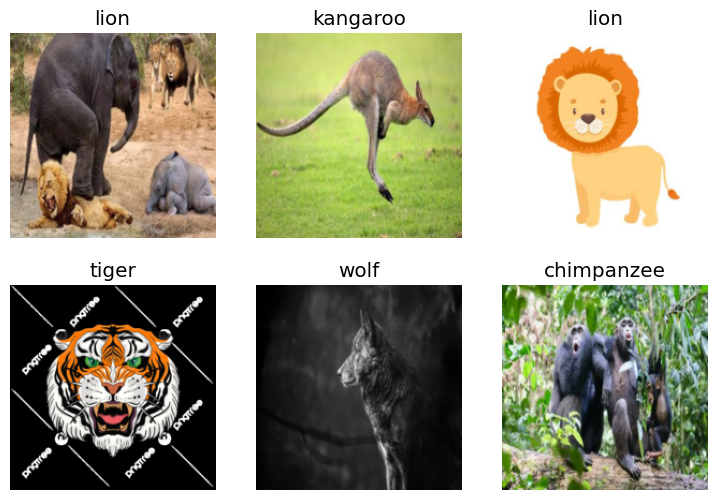
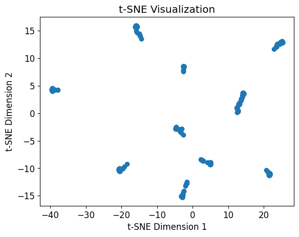

pip list | grep "torch"torch 2.5.1
torchvision 0.20.1
Note: you may need to restart the kernel to use updated packages.Benedict Thekkel
torch 2.5.1
torchvision 0.20.1
Note: you may need to restart the kernel to use updated packages.fastai 2.7.18
Note: you may need to restart the kernel to use updated packages.fastbook 0.0.29
Note: you may need to restart the kernel to use updated packages.nbdevAuto 0.3.26
Note: you may need to restart the kernel to use updated packages.
[W101 22:30:50.769928907 NNPACK.cpp:61] Could not initialize NNPACK! Reason: Unsupported hardware.| epoch | train_loss | valid_loss | accuracy | error_rate | time |
|---|---|---|---|---|---|
| 0 | 1.879884 | 0.455274 | 0.843575 | 0.156425 | 00:02 |
| epoch | train_loss | valid_loss | accuracy | error_rate | time |
|---|---|---|---|---|---|
| 0 | 0.552267 | 0.382098 | 0.860335 | 0.139665 | 00:03 |
| 1 | 0.376326 | 0.326573 | 0.891061 | 0.108939 | 00:02 |
| 2 | 0.242192 | 0.306850 | 0.905028 | 0.094972 | 00:02 |
| 3 | 0.160230 | 0.317596 | 0.905028 | 0.094972 | 00:02 |
| 4 | 0.108631 | 0.317832 | 0.913408 | 0.086592 | 00:02 |
features, labels = learn11.get_preds(dl=dls.valid)
# Replace 'val_features' with your extracted features
tsne = TSNE(n_components=2)
reduced_features = tsne.fit_transform(features)
# Replace 'labels' with your image labels if available
plt.scatter(reduced_features[:, 0], reduced_features[:, 1])
plt.xlabel('t-SNE Dimension 1')
plt.ylabel('t-SNE Dimension 2')
plt.title('t-SNE Visualization')
plt.show()
animal_list = ('chimpanzee','elephant','giraffe',
'kangaroo', 'lion','panda', 'rabbit',
'rhino','tiger','wolf')
image= 'Data/panda.jpg'
is_real,_,probs = learn11.predict(PILImage.create(image))
max_value, max_index = torch.max(probs, dim=0)
print(f"This is a: {animal_list[max_index]} with probability: {max_value}.")
Image.open(image).to_thumb(256,256)This is a: panda with probability: 0.9999746084213257.Probability of chimpanzee is :0.000001.
Probability of elephant is :0.000000.
Probability of giraffe is :0.000000.
Probability of kangaroo is :0.000000.
Probability of lion is :0.000000.
Probability of panda is :0.999975.
Probability of rabbit is :0.000024.
Probability of rhino is :0.000000.
Probability of tiger is :0.000000.
Probability of wolf is :0.000000.